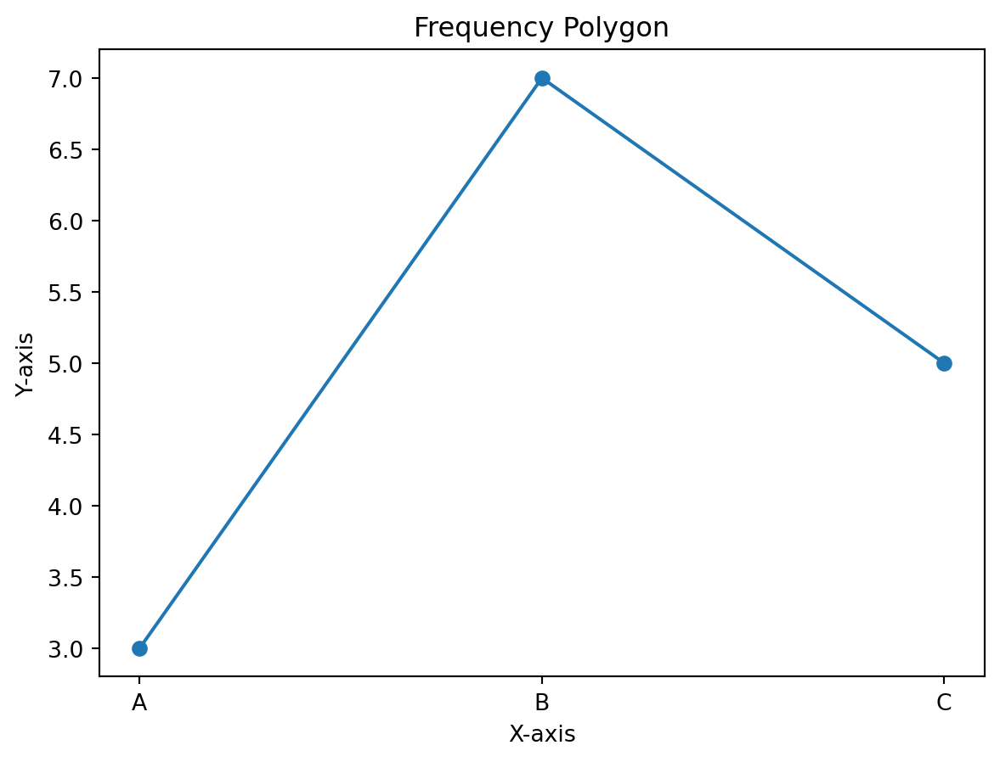
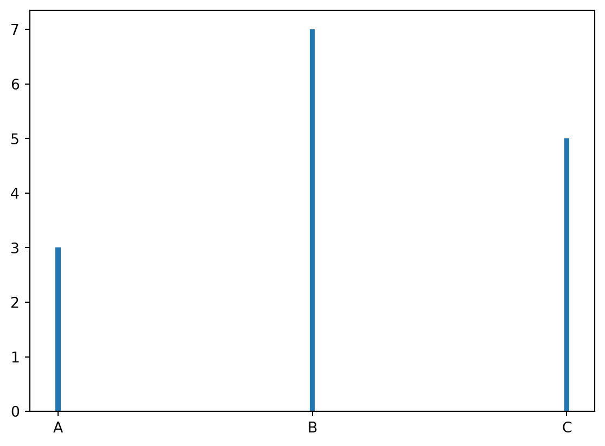

import numpy as np
import matplotlib.pyplot as plt
# Sample data
data = np.array(['A', 'B', 'C', 'A', 'A', 'B','B','B','B','B','B','C','C','C','C'])
# Calculate frequencies
values, frequencies = np.unique(data, return_counts=True)
# Line Graph
plt.plot(values, frequencies, marker='o')
plt.title('Frequency Polygon')
plt.xlabel('X-axis')
plt.ylabel('Y-axis')
plt.show()
plt.bar(values, frequencies, width=0.02)
plt.show()
